Votre accueil Google TV, sans publicité : un launcher alternatif pour vos applis, l'heure, la météo, et une bibliothèque de films et séries en affiches. Your Google TV home screen, without ads: an alternative launcher for your apps, the time, the weather, and a library of films and series shown as posters.
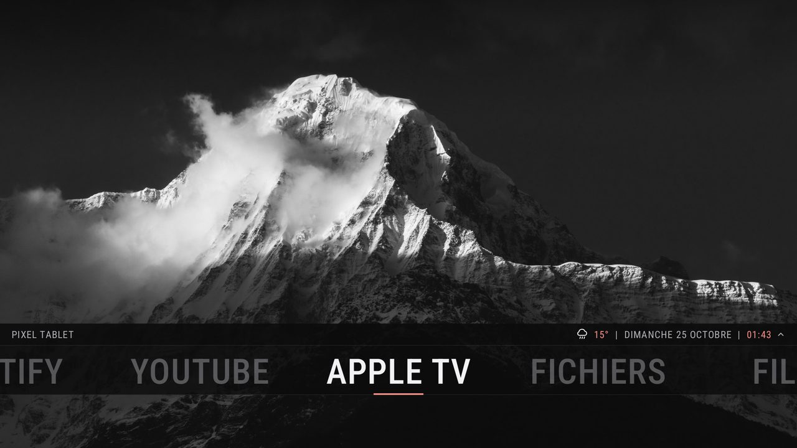
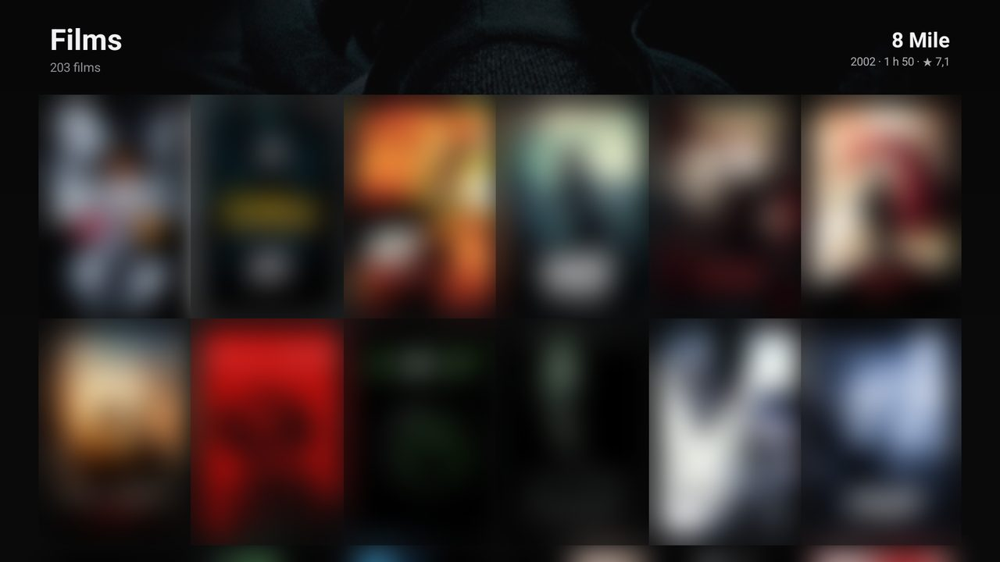
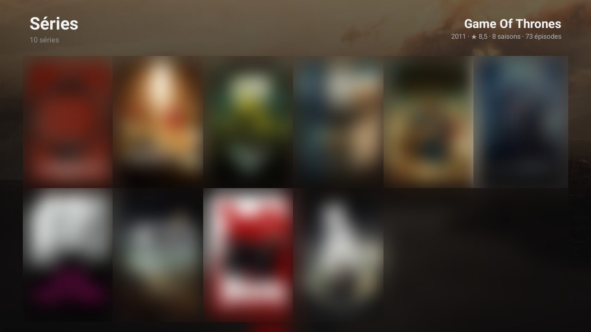
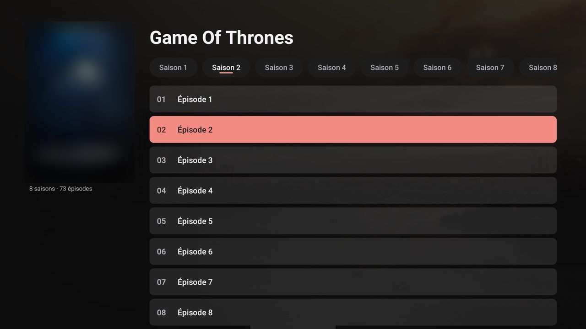
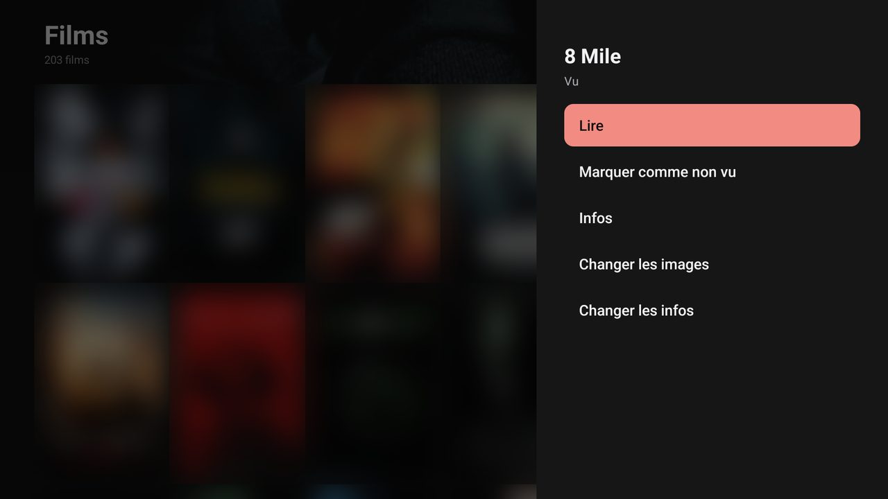
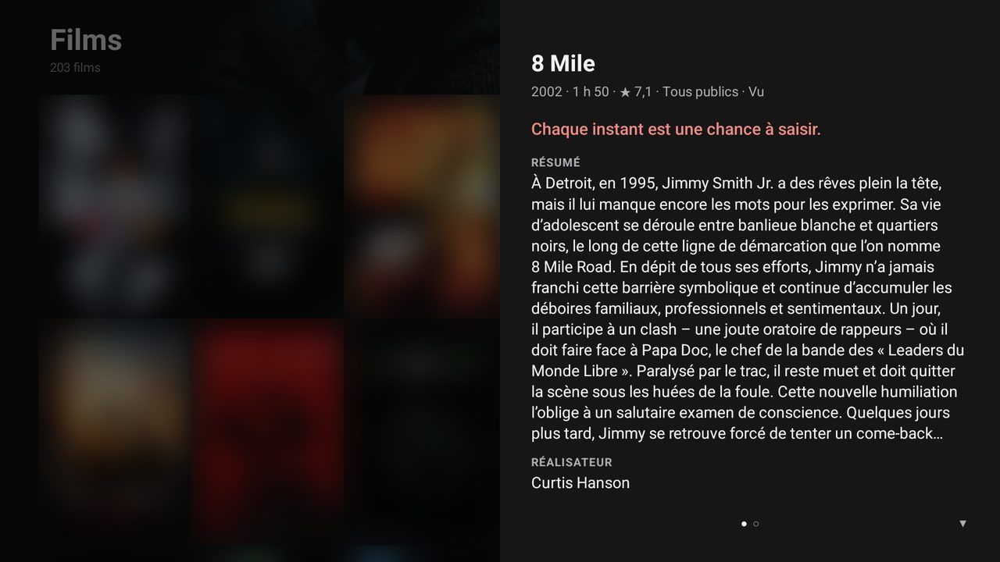
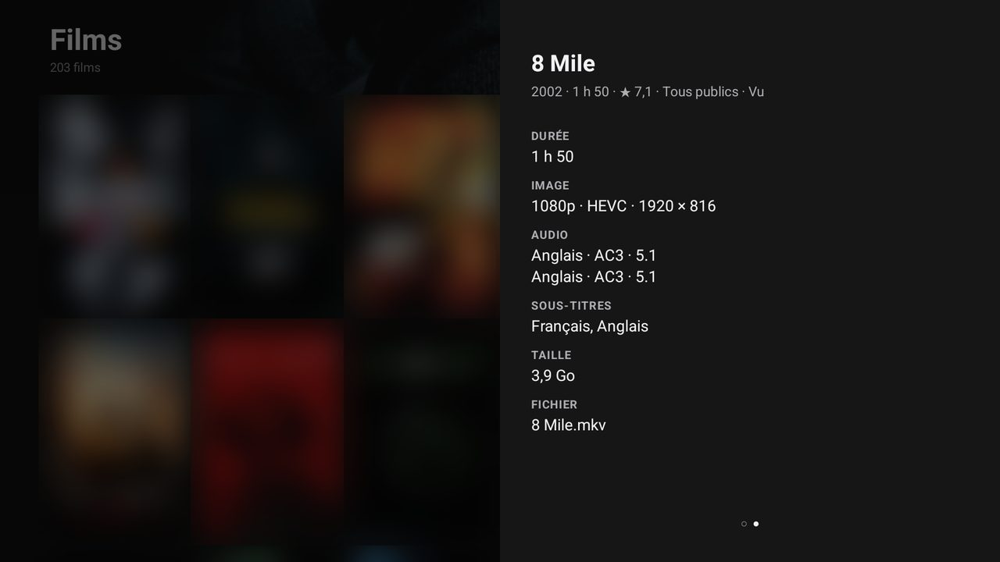
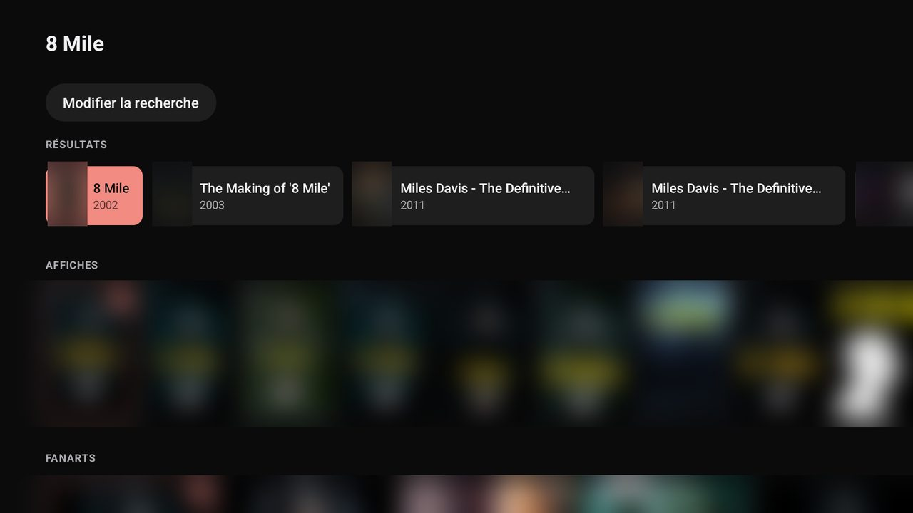
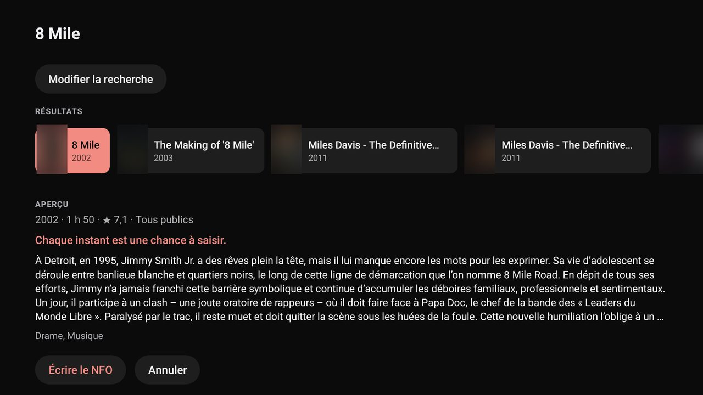
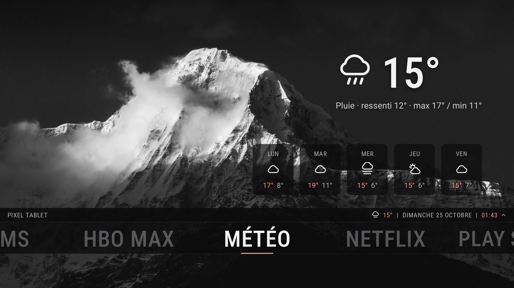
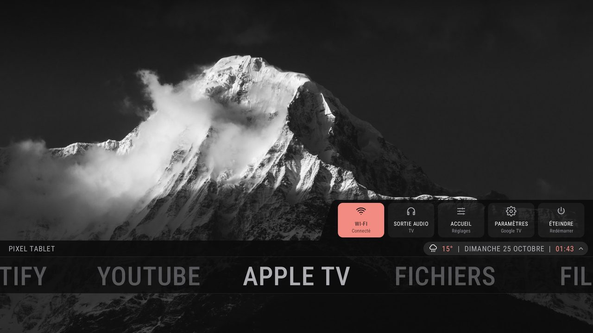
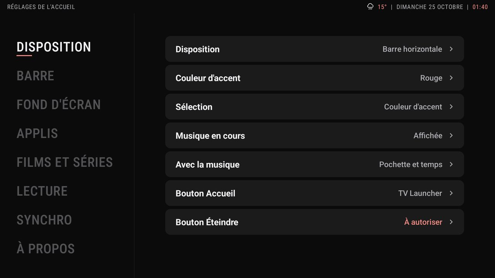
Un écran d'accueil simple pour Google TV : vos applis, l'heure, la météo et votre fond d'écran. Explorateur de fichiers, bibliothèque de films et séries et lecteur vidéo intégrés pour le NAS et les clés USB. Son style s'inspire du thème Aeon Nox: SiLVO de Kodi. A simple home screen for Google TV: your apps, the time, the weather and your wallpaper. A file explorer, a film and series library and a video player are built in, for your NAS and USB drives. Its look is inspired by Kodi's Aeon Nox: SiLVO theme.
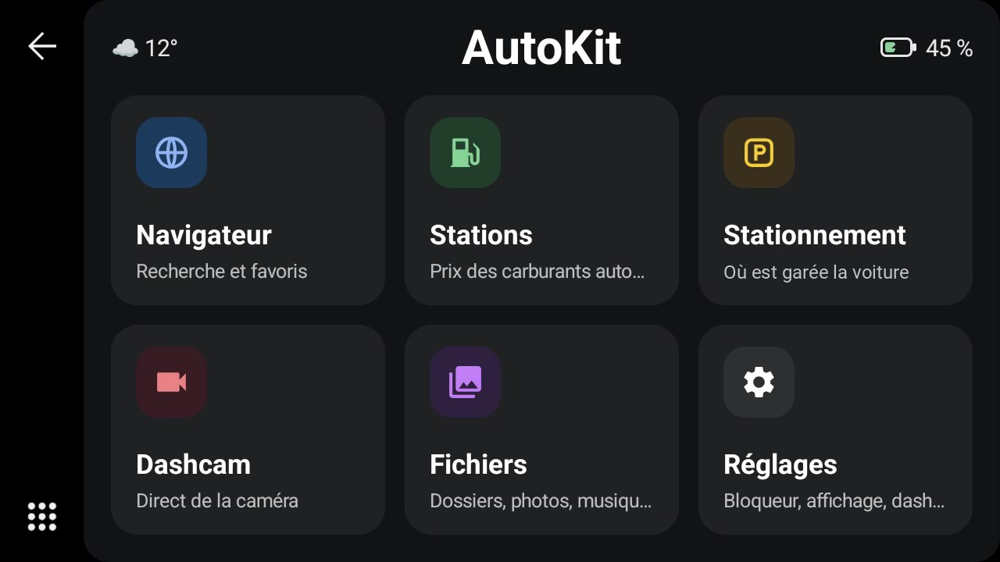
Un accueil à tuiles pour Android Auto, à l'arrêt : navigateur, stations, stationnement, dashcam et fichiers sur l'écran de la voiture. Dashcam testée avec une 70mai (A810) ; les autres modèles ne sont pas garantis. A tile home screen for Android Auto, while parked: browser, fuel stations, parking, dashcam and files on the car's screen. Dashcam tested with a 70mai (A810); other models are not guaranteed.
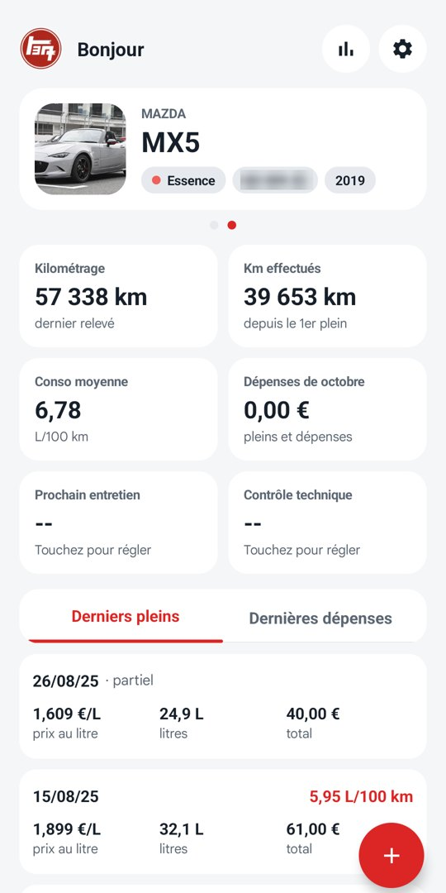
Pleins, consommation, dépenses et échéances de vos véhicules. Le même compte que le site autotracks.web.app, avec des rappels avant l'entretien et le contrôle technique. Fill-ups, fuel economy, expenses and deadlines for your vehicles. The same account as the autotracks.web.app website, with reminders before servicing and the technical inspection.
Les applis ne passent pas par le Play Store : Android demande une autorisation la première fois. Une nouvelle version s'installe de la même façon, par-dessus l'ancienne, sans rien perdre. The apps are not on the Play Store: Android asks for a permission the first time. A new version installs the same way, over the old one, without losing anything.
Google TV ou Chromecast avec Google TV. Un PC est nécessaire une seule fois pour en faire l'accueil.Google TV or Chromecast with Google TV. A PC is needed once, to make it your home screen.
adb shell pm disable-user --user 0 com.google.android.apps.tv.launcherx adb shell pm disable-user --user 0 com.google.android.tungsten.setupwraith
adb shell pm enable com.google.android.apps.tv.launcherx adb shell pm enable com.google.android.tungsten.setupwraith
Téléphone Android 15 ou plus, avec Android Auto.Android 15 or later phone, with Android Auto.
Téléphone Android 15 ou plus. Un compte AutoTracks est nécessaire : il se crée dans l'appli (ou sur autotracks.web.app, c'est le même).Android 15 or later phone. An AutoTracks account is needed: create it in the app (or on autotracks.web.app, it is the same one).